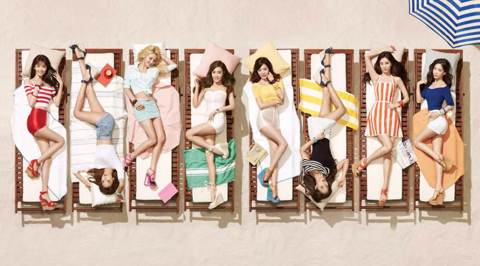

组合介绍
少女时代是韩国SM娱乐有限公司在2007年推出的女子组合，由年龄为16-18岁的九名女高中生组成。第一张单曲《再次重逢的世界》2007年8月2日在韩国上市，于2007年8月5日正式登台演出。少女时代的成员们身兼歌手、电影演员、主持人、DJ等多种才能，而且成员们都擅长英语、日语、汉语等语言。少女时代以韩国、日本两地活动为主，她们也曾多次来中国，美国等国家演出。从出道以来，少女时代就以优异的成绩表现出了改写韩国女子组合乐坛历史的强大气势。少女时代在出道时以独特的宣传方法（每天公开一名成员），更是为她们以后的发展道路奠定了坚实的基础。少女时代的每位成员由各种不同的选秀进入到韩国SM娱乐有限公司当练习生。（郑秀妍在SM公司训练时间长达七年零六个月，是少女时代中训练最长时间的成员）因此少女时代在唱歌、舞蹈、演戏、主持等方面都达到了很高的水平。

| 序号 | 热门歌曲 | 发行时间 | 序号 | 热门歌曲 | 发行时间 |
| 01 | gee | 2008-8-23 | 04 | hoot | 2008-8-23 |
| 02 | I Got A Boy | 2009-6-12 | 05 | catch me if you can | 2015-7-8 |
| 03 | Run Devil Run | 2010-4-7 | 06 | mr.mr | 2009-5-1 |
少女时代最新消息
30分钟前————少女时代Yuri现身北京，想演还珠格格-新华网[新华网]
4小时前———网剧《火爆天王》开机 少女时代徐珠贤获粉丝庆生[中国青年网]
6小时前————exo bigbang 少女时代[中国海南视窗]
一天前————少女时代允儿现身北京，清新可人[光明网]
两天前——-少女时代泰妍《WHY》专辑突破十万[图][中国网]